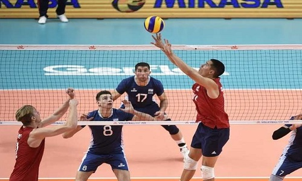
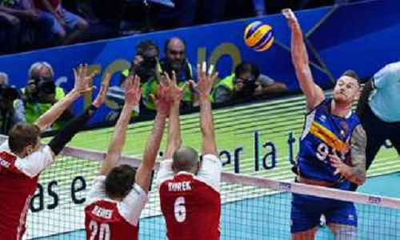
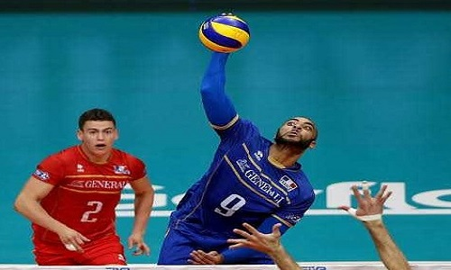
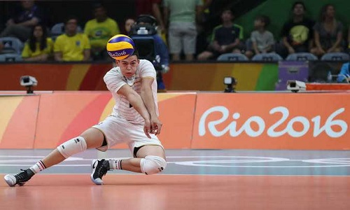
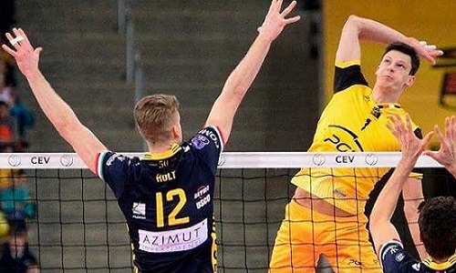

Bola voli adalah olahraga yang sangat menyenangkan, bisa dimainkan
oleh semua orang, tanpa kecuali. Banyak yang berfikir bahwa jika
ingin bermain voli maka ia harus memiliki tubuh yang tinggi, itu
sangat tidak benar. Dengan latihan, dan usaha yang baik semua orang
dapat menjadi pemain voli yang handal. Nekoma Volleyball School
adalah sekolah bola voli yang akan selalu membantu setiap atletnya
mencapai potensi tertinggi mereka, menjadi tinggi memang sangat
keren, tapi pendek bukanlah halangan.
About Volleyball

Setter
Setter atau biasa juga disebut dengan Tosser, adalah pemain
yang bertugas memberikan umpan(toss) kepada pemain lainnya,
karena dalam voli setiap tim hanya diperbolehkan menyentuh
bola sebanyak 3 kali, maka Setter adalah orang yang
bertanggung jawab mengolah bola kedua yang telah diterima
rekannya, dan mengumpannya pada pemain lain. Setter adalah
posisi yang sangat penting karena ia bertindak sebagai
konduktor permainan dalam tim, maka biasanya Setter memiliki
kemampuan teknis yang paling baik.

Opposite
Opposite adalah posisi yang bersebrangan dengan Setter,
maksudnya agar jika Setter sedang ada di posisi yang tidak
memungkinkan mengumpan, Opposite dapat turun tangan, selain
itu pada zaman sekarang Opposite biasa ditempati oleh senjata
utama sebuah tim, atau pemain dengan serangan yang paling
baik, dan menjadi Point Getter utama sebuah tim,
sehingga ia tidak melakukan penerimaan bola jika tidak
terpaksa. Opposite biasa ditempati oleh pemain yang serba bisa
(all-rounder) atau pemain dengan serangan terkuat, hal ini
disesuaikan dengan strategi tim.

Outside Hitter
Outside hitter atau penyerang kiri, adalah pemain yang sangat
stabli, dimana ia memiliki tanggung jawab yang sama dalam
menyerang dan bertahan, maka dari itu dalam satu tim posisi
ini diisi oleh dua orang yang letaknya bersebrangan, sehingga
saat seroang pemain harus berpindah ke belakang, di depan akan
tetap ada seorang Outside Hitter, tidak mengherankan jika
posisi ini diisi oleh pemain yang sangat beragam kemampuannya,
karena tugas merekapun lebih banyak.

Libero
Libero adalah pemain yang memiliki tugas utama untuk bertahan,
ia tidak berotasi ke depan ataupun melakukan servis, Libero
adalah pemain dengan kemampuan bertahan di atas rata-rata,
dimana ia mampu melakukan penerimaan servis, block follow,
ataupun meng-cover rekannya yang lain. Walaupun biasanya
Libero ini diisi oleh pemain paling pendek, namun itu bukanlah
ketentuan.

Middle Blocker
Middle Blocker atau Quicker adalah pemain yang memiliki tugas
utama untuk melakukan blok terhadap serangan lawan, setalh
service dilakukan pemain ini akan langsung berpindah ke depan
net di tengah agar memiliki wilayah yang lebih luas untuk
melakukan blok, selain itu dalam penyerangan pemain ini sangat
penting, karena bertindak sebagai penyerang tercepat,
sekaligus umpan sehingga membuat pemain lain lebih bebas.
dalam tim voli profesional Middle Blocker akan dirotasi oleh
libero jika giliran servisnya selesai, dan akan kembali masuk
saat ia kembali ke posisi depan.